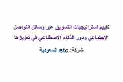
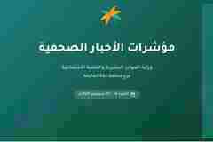

استراتيجية محتوىحملة علاقات عامة
مهرجان الثقافات والشعوب
منظومة متكاملة ضمت الجمهور والأهداف والرسائل، خطة النشر، التغطية، نماذج الكتابة وأفكار الريلز.
أخصائي محتوى رقمي وتواصل مع العملاء
معرض مختار لأعمال نفذتها بصورة مستقلة منذ عام 2022، تشمل استراتيجيات المحتوى، الحملات والتقارير، الكتابة الرقمية، وتصميم المخرجات باستخدام Canva.
أعمل منذ عام 2022 بصورة مستقلة على مشروعات مدفوعة لعملاء خاصين. أتولى البحث وجمع المعلومات، فهم الجمهور، بناء الفكرة، كتابة المحتوى، تنظيم الوثائق، وتصميم المخرج النهائي. كما أمتلك خبرة سابقة في خدمة العملاء وبريد القراء والعلاقات العامة.
دراسات حالة ومعاينات أصلية من الأعمال، مع صفحات تفصيلية لعرض المنهجية والمخرجات.
منظومة متكاملة ضمت الجمهور والأهداف والرسائل، خطة النشر، التغطية، نماذج الكتابة وأفكار الريلز.
حملة وتقرير مفصل يشملان تحليل الموقف، تقسيم الجمهور، أهداف SMART، الرسائل والتكتيكات ومؤشرات القياس.
تقرير لمواد السوشيال ميديا وجدول يومي يوزع المحتوى بين الصور، الفيديو القصير، العروض والمحتوى التفاعلي.

تحليل وظائف المنصات وأنواع المحتوى، وربط الرسائل بالهوية والخدمات ورحلة العميل والتحويل الرقمي.

تلخيص المواد المنشورة والجولات والاتجاهات التحريرية في تقرير بصري يسهل قراءته والاستفادة منه.
منشورات تعريفية وتوعوية وترويجية، وهوكات وسيناريوهات فيديو مبنية على المشكلة والحل والدعوة إلى الإجراء.
في هذه الأعمال توليت المحتوى والتصميم معًا: البحث، الكتابة، تنظيم المعلومات، بناء التسلسل البصري، والإخراج النهائي باستخدام Canva.
نشرة تجمع مقدمة قائمة على البيانات وثلاث خطوات عملية لاستعادة التوازن الرقمي.
وثيقة مؤسسية طويلة تضم التحليل والجداول وخطة التحسين وبطاقات تثقيفية ثنائية اللغة.
إعلان موجّه للأطفال والأسر يوضح التجارب والفوائد ومعلومات الموعد والرسوم والفئة.
تنسيق تقرير متابعة المواد وجدول نشر يومي ضمن هوية بصرية متجانسة.
التعامل مع المحتوى والتواصل بوصفهما رحلة واحدة تبدأ بالرسالة وتنتهي بإغلاق الطلب وتوثيق الملاحظات.
تحديد نوع الرسالة وأولويتها والبيانات المطلوبة.
صياغة رد واضح يحافظ على نبرة العلامة ويحدد الخطوة التالية.
إحالة الحالة إلى القسم المختص ومتابعتها حتى المعالجة.
إبلاغ العميل ورصد الأسئلة والملاحظات المتكررة.
مشروعات مدفوعة تشمل البحث والكتابة والتخطيط والتصميم وإدارة المراجعات والتسليم.
متابعة الرسائل والاستفسارات، تصنيفها، ورصد اهتمامات الجمهور والملاحظات المتكررة.
التعامل مع الاستفسارات، تقديم المعلومات، وتنظيم التواصل مع العملاء والجهات ذات العلاقة.
علاقات عامة وإعلان — جامعة صنعاء
مؤسسة توكل كرمان
التواصل